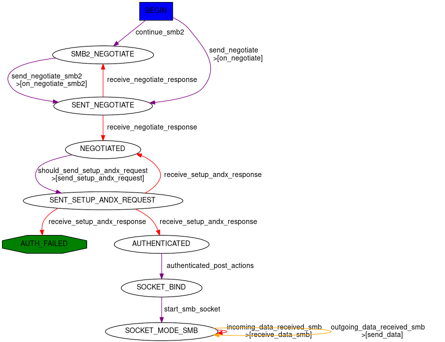
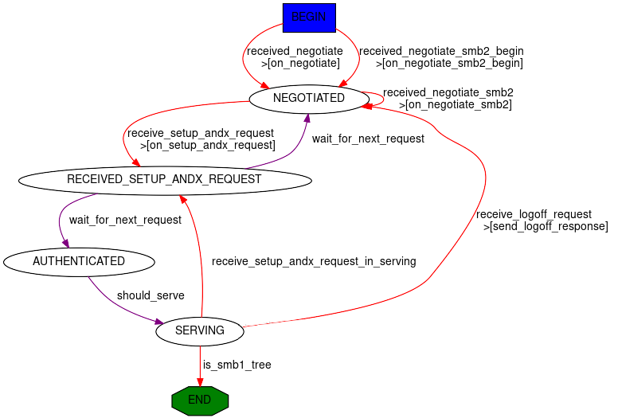

SMB
Scapy provides pretty good support for SMB 2/3 and very partial support of SMB1.
You can use the SMB2_Header to dissect or build SMB2/3, or SMB_Header for SMB1.
SMB 2/3 client
Scapy provides a small SMB 2/3 client Automaton: SMB_Client

Scapy’s SMB client stack is as follows:
the
SMB_ClientAutomaton handles the logic to bind, negotiate and establish the SMB session (eventually using Security Providers).This Automaton is wrapped into a
SMB_SOCKETobject which provides access to basic SMB commands such as open, read, write, close, etc.This socket is wrapped into a
smbclientclass which provides a high-level SMB client, with functions such asls,cd,get,put, etc.
You can access any of the 3 layers depending on how low-level you want to get.
We’ll skip over the lowest one in this documentation, as it not really usable as an API, but note that this is where to look if you want to change SMB negotiation or session setup .(people wanting to use this are welcomed to have a look at the scapy/layers/smbclient.py code).
High-Level smbclient
From the CLI
Let’s start by using smbclient from the Scapy CLI:
>>> smbclient("server1.domain.local", "Administrator@domain.local")
Password: ************
SMB authentication successful using SPNEGOSSP[KerberosSSP] !
smb: \> shares
ShareName ShareType Comment
ADMIN$ DISKTREE Remote Admin
C$ DISKTREE Default share
IPC$ IPC Remote IPC
NETLOGON DISKTREE Logon server share
SYSVOL DISKTREE Logon server share
Users DISKTREE
common DISKTREE
smb: \> use c$
smb: \> cd Program Files\Microsoft\
smb: \Program Files\Microsoft> ls
FileName FileAttributes EndOfFile LastWriteTime
. DIRECTORY 0B Fri, 24 Feb 2023 17:00:27 (1677254427)
.. DIRECTORY 0B Fri, 24 Feb 2023 17:00:27 (1677254427)
EdgeUpdater DIRECTORY 0B Fri, 24 Feb 2023 17:00:27 (1677254427)
Note
You can use help or ? in the CLI to get the list of available commands.
As you can see, the previous example used Kerberos to authenticate.
By default, the smbclient class will use a SPNEGOSSP and provide ask for both NTLM and Kerberos. but it is possible to have a greater control over this by providing your own ssp attribute.
smbclient using a NTLMSSP
>>> smbclient("server1.domain.local", ssp=NTLMSSP(UPN="Administrator", PASSWORD="password"))
You might be wondering if you can pass the HashNT of the password of the user ‘Administrator’ directly. The answer is yes, you can ‘pass the hash’ directly:
>>> smbclient("server1.domain.local", ssp=NTLMSSP(UPN="Administrator", HASHNT=bytes.fromhex("8846f7eaee8fb117ad06bdd830b7586c")))
smbclient using a KerberosSSP
>>> smbclient("server1.domain.local", ssp=KerberosSSP(UPN="Administrator@domain.local", PASSWORD="password"))
smbclient using a KerberosSSP created by Ticketer++:
>>> load_module("ticketer")
>>> t = Ticketer()
>>> t.request_tgt("Administrator@DOMAIN.LOCAL")
Enter password: **********
>>> t.request_st(0, "host/server1.domain.local")
>>> smbclient("server1.domain.local", ssp=t.ssp(1))
SMB authentication successful using KerberosSSP !
If you pay very close attention, you’ll notice that in this case we aren’t using the SPNEGOSSP wrapper. You could have used ssp=SPNEGOSSP([t.ssp(1)]).
smbclient forcing encryption:
>>> smbclient("server1.domain.local", "admin", REQUIRE_ENCRYPTION=True)
Note
It is also possible to start the smbclient directly from the OS, using the following:
$ python3 -m scapy.layers.smbclient server1.domain.local Administrator@DOMAIN.LOCAL
Use python3 -m scapy.layers.smbclient -h to see the list of available options.
Programmatically
A cool feature of the smbclient is that all commands that you can call from the CLI, you can also call programmatically.
Let’s re-do the initial example programmatically, by turning off the CLI mode. Obviously prompting for passwords will not work so make sure the client has everything it needs for Session Setup.
>>> from scapy.layers.smbclient import smbclient
>>> cli = smbclient("server1.domain.local", "Administrator@domain.local", password="password", cli=False)
>>> shares = cli.shares()
>>> shares
[('ADMIN$', 'DISKTREE', 'Remote Admin'),
('C$', 'DISKTREE', 'Default share'),
('common', 'DISKTREE', ''),
('IPC$', 'IPC', 'Remote IPC'),
('NETLOGON', 'DISKTREE', 'Logon server share '),
('SYSVOL', 'DISKTREE', 'Logon server share '),
('Users', 'DISKTREE', '')]
>>> cli.use('c$')
>>> cli.cd(r'Program Files\Microsoft')
>>> names = [x[0] for x in cli.ls()]
>>> names
['.', '..', 'EdgeUpdater']
Mid-Level SMB_SOCKET
If you know what you’re doing, then the High-Level smbclient might not be enough for you. You can go a level lower using the SMB_SOCKET.
You can instantiate the object directly or via the from_tcpsock() helper.
Let’s write a script that connects to a share and list the files in the root folder.
import socket
from scapy.layers.smbclient import SMB_SOCKET
from scapy.layers.spnego import SPNEGOSSP
from scapy.layers.ntlm import NTLMSSP, MD4le
from scapy.layers.kerberos import KerberosSSP
# Build SSP first. In SMB_SOCKET you have to do this yourself
password = "password"
ssp = SPNEGOSSP([
NTLMSSP(UPN="Administrator", PASSWORD=password),
KerberosSSP(
UPN="Administrator@domain.local",
PASSWORD=password,
)
])
# Connect to the server
sock = socket.socket()
sock.connect(("server1.domain.local", 445))
smbsock = SMB_SOCKET.from_tcpsock(sock, ssp=ssp)
# Tree connect
tid = smbsock.tree_connect("C$")
smbsock.set_TID(tid)
# Open root folder and query files at root
fileid = smbsock.create_request('', type='folder')
files = smbsock.query_directory(fileid)
names = [x[0] for x in files]
# Close the handle
smbsock.close_request(fileid)
# Close the socket
smbsock.close()
This has a lot more overhead so make sure you need it.
Something hybrid that might be easier to use, is to access the underlying SMB_SOCKET in a higher-level smbclient:
>>> from scapy.layers.smbclient import smbclient
>>> cli = smbclient("server1.domain.local", "Administrator@domain.local", password="password", cli=False)
>>> cli.use('c$')
>>> smbsock = cli.smbsock
>>> # Open root folder and query files at root
>>> fileid = smbsock.create_request('', type='folder')
>>> files = smbsock.query_directory(fileid)
>>> names = [x[0] for x in files]
Low-Level SMB_Client
Finally, it’s also possible to call the underlying smblink socket directly.
Again, you can instantiate the object directly or via the from_tcpsock() helper.
>>> import socket
>>> from scapy.layers.smbclient import SMB_Client
>>> sock = socket.socket()
>>> sock.connect(("192.168.0.100", 445))
>>> lowsmbsock = SMB_Client.from_tcpsock(sock, ssp=NTLMSSP(UPN="Administrator", PASSWORD="password"))
>>> resp = cli.sock.sr1(SMB2_Tree_Connect_Request(Path=r"\\server1\c$"))
It’s also accessible as the ins attribute of a SMB_SOCKET, or the sock attribute of a smbclient.
>>> from scapy.layers.smbclient import smbclient
>>> cli = smbclient("server1.domain.local", "Administrator@domain.local", password="password", cli=False)
>>> lowsmbsock = cli.sock
>>> resp = cli.sock.sr1(SMB2_Tree_Connect_Request(Path=r"\\server1\c$"))
SMB 2/3 server
Scapy provides a SMB 2/3 server Automaton: SMB_Server

Once again, Scapy provides high level smbserver class that allows to spawn a SMB server.
High-Level smbserver
The smbserver class allows to spawn a SMB server serving a selection of shares.
A share is identified by a name and a path (+ an optional description called remark).
Start a SMB server with NTLM auth for 2 users:
smbserver(
shares=[SMBShare(name="Scapy", path="/tmp")],
iface="eth0",
ssp=NTLMSSP(
IDENTITIES={
"User1": MD4le("Password1"),
"Administrator": MD4le("Password2"),
},
)
)
Start a SMB server with NTLM auth in an AD, using machine credentials:
Note
This requires an active account with WORKSTATION_TRUST_ACCOUNT in its userAccountControl. (otherwise you might get STATUS_NO_TRUST_SAM_ACCOUNT)
smbserver(ssp=NTLMSSP_DOMAIN(UPN="Computer1@domain.local", HASHNT=bytes.fromhex("7facdc498ed1680c4fd1448319a8c04f")))
Start a SMB server with Kerberos auth:
smbserver(
shares=[SMBShare(name="Scapy", path="/tmp")],
iface="eth0",
ssp=KerberosSSP(
KEY=Key(
EncryptionType.AES256_CTS_HMAC_SHA1_96,
key=bytes.fromhex("0000000000000000000000000000000000000000000000000000000000000000"),
),
SPN="cifs/server.domain.local",
),
)
You can of course combine a NTLM and Kerberos server and provide them both over a SPNEGOSSP:
smbserver(
shares=[SMBShare(name="Scapy", path="/tmp")],
iface="eth0",
ssp=SPNEGOSSP(
[
KerberosSSP(
KEY=Key(
EncryptionType.AES256_CTS_HMAC_SHA1_96,
key=bytes.fromhex("0000000000000000000000000000000000000000000000000000000000000000"),
),
SPN="cifs/server.domain.local",
),
NTLMSSP(
IDENTITIES={
"User1": MD4le("Password1"),
"Administrator": MD4le("Password2"),
},
),
]
),
)
Note
By default, Scapy’s SMB server is read-only. You can set readonly to False to disable it, as follows.
Start a SMB server with NTLM in Read-Write mode
smbserver(
shares=[SMBShare(name="Scapy", path="/tmp")],
iface="eth0",
ssp=NTLMSSP(
IDENTITIES={
"User1": MD4le("Password1"),
"Administrator": MD4le("Password2"),
},
),
# Enable Read-Write
readonly=False,
)
Start a SMB server requiring encryption (two methods):
# Method 1: require encryption globally (available in SMB 3.0.0+)
>>> smbserver(..., REQUIRE_ENCRYPTION=True)
# Method 2: for a specific share (only available in SMB 3.1.1+)
>>> smbserver(..., shares=[SMBShare(name="Scapy", path="/tmp", encryptdata=True)])
Note
It is possible to start the smbserver (albeit only in unauthenticated mode) directly from the OS, using the following:
$ python3 -m scapy.layers.smbserver --port 12345
Use python3 -m scapy.layers.smbserver -h to see the list of available options.
Low-Level SMB_Server
To change the functionality of the SMB_Server, you shall extend the server class (which is an automaton) and provide additional custom conditions (or overwrite existing ones).
from scapy.layers.smbserver import SMB_Server
class MyCustomSMBServer(SMB_Server):
"""
Ridiculous demo SMB Server
We overwrite the handler of "SMB Echo Request" to do some crazy stuff
"""
@ATMT.action(SMB_Server.receive_echo_request)
def send_echo_reply(self, pkt):
super(MyCustomSMBServer, self).send_echo_reply(pkt) # send echo response
print("WHAT? An ECHO REQUEST? You MUUUSST be a linux user then, since Windows NEEEVER sends those !")